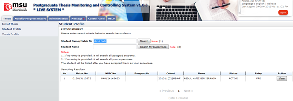
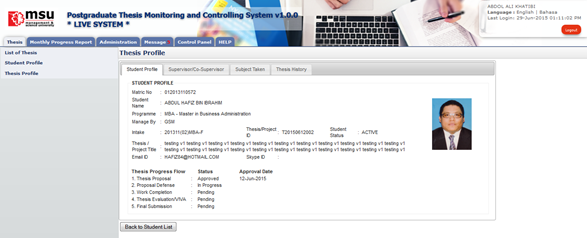
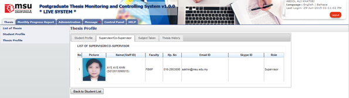
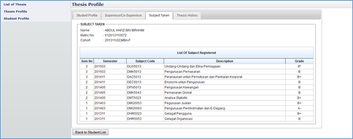
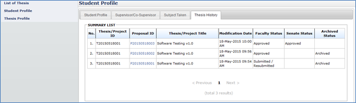

Student profile can be retrieved via student’s Thesis ID or Title

Figure 11: Thesis Tab
Steps:-
- Click on the Thesis tab on the system Top panel section.
- The Student Profile menu will be displayed on the system Left panel and click on it.
- The searching page will be displayed which the user can search for a particular thesis in order to view its detail
- Enter the Thesis ID or Title. into the field and click on Search button to search the thesis
- The record will be displayed under the search result.
- Locate the student from the list and click View button to view the profile details
Student Profile Details
Student Profile will contain all information that related to students which are Student Profile, Supervisor/Co-supervisor lists, Subject Taken and Thesis History.
Student Profile
Student Profile tab contains the basic student and thesis information including its thesis progress status

Figure 12: Student Profile Tab
Steps:-
- It is only for view information.
- Click Back to Student List button to return back to Student List search page
- Supervisor/Co-Supervisor List
Supervisor or Co-Supervisor is the academic staff who has been assigned by Faculty to supervise the student in delivering the thesis and approved by the Senate.
There are conditions for the student to see the list of his/her supervisors. The conditions are:-
- Supervisor/Co-Supervisor has been assigned by Faculty and approved by the Senate
- Supervisor/Co-Supervisor has accepted the appointment to supervise the student.

Figure 13: List of Supervisor / Co-Supervisor
Steps:-
- It is only for view information.
- Click Back to Student List button to return back to Student List search page
Subject Taken
Subject Taken tab will list the entire subject registered by the students for all semester during his study.

Figure 14: Subject Taken
Steps:-
- It is only for view information.
- Click Back to Student List button to return back to Student List search page
Thesis History
Thesis History tab contains the proposal progress history starting from its submission by the student untill its approval by the Senate. It captures the date of

Figure 15: Thesis Tab – Thesis History
Steps:-
- It is only for view information.
- Click Back to Student List button to return back to Student List search page
Created with the Personal Edition of HelpNDoc: Create HTML Help, DOC, PDF and print manuals from 1 single source